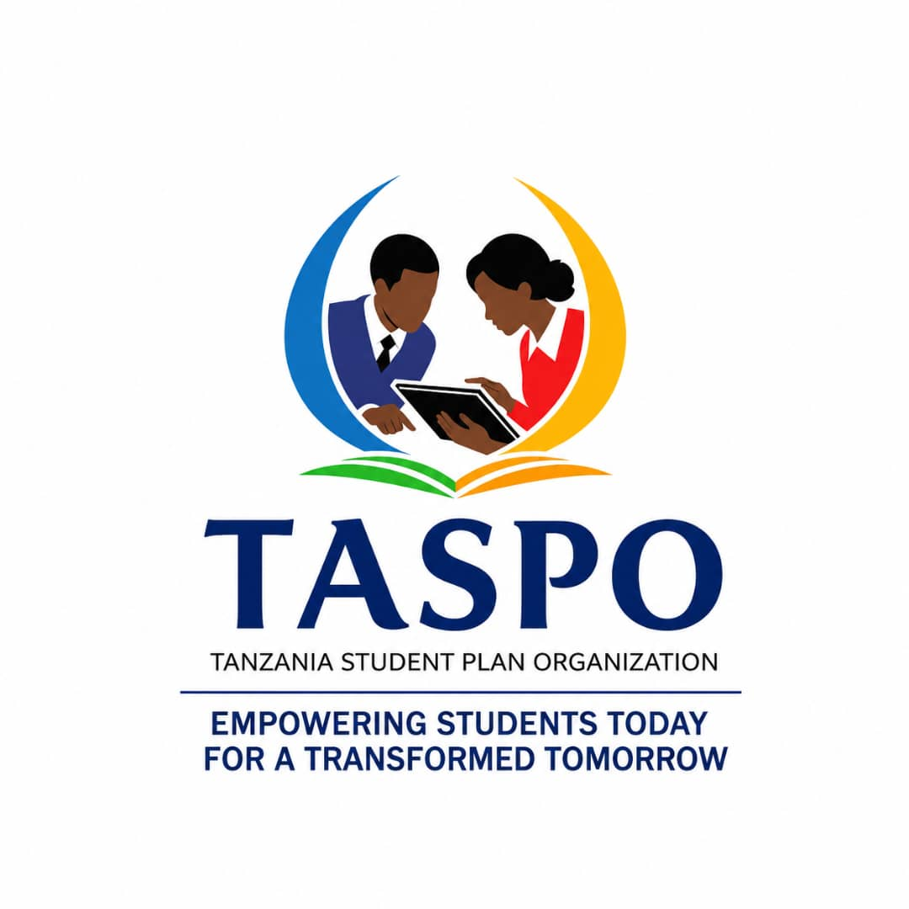
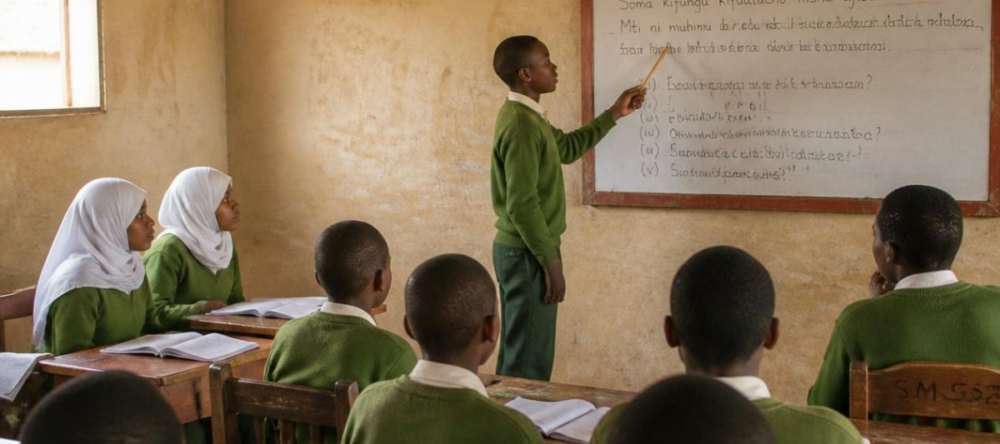
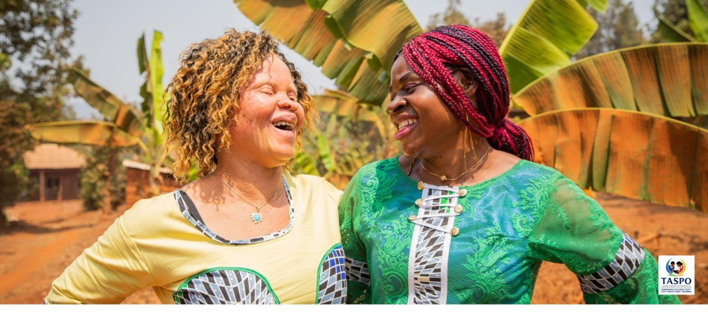
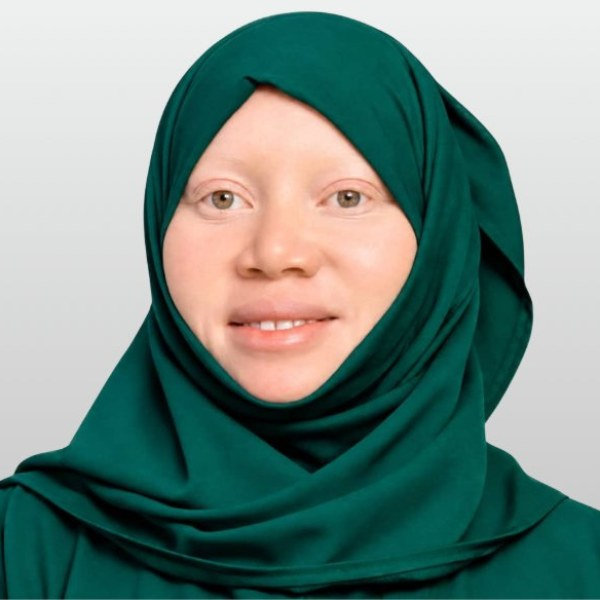
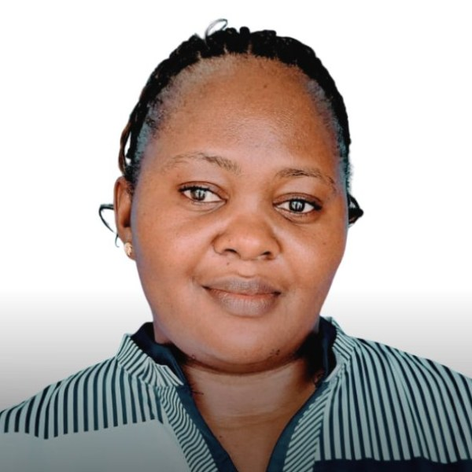
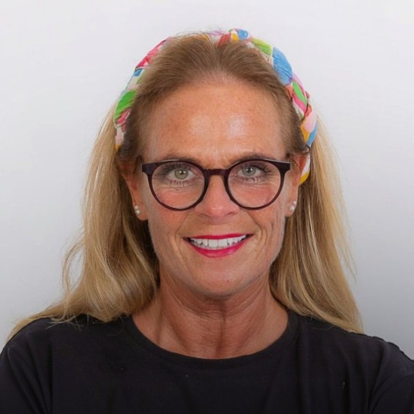
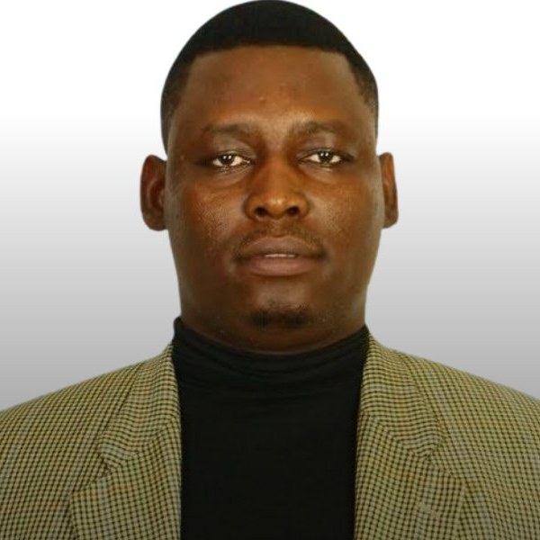

Tanzania Student Plan Organization (TASPO) is on a mission to close the technology gap in Tanzanian schools â from primary level through university. Too many students still learn without access to the digital tools shaping the modern world, and TASPO exists to change that: bringing modern teaching methods, technology and life-skills training into classrooms across the country.
Tanzania Student Plan Organization (TASPO) is a registered non-governmental organisation based in Singida, Tanzania, working to change what learning looks like for students across the country. We were founded in response to a simple but urgent problem: too many schools, from primary level right through to university, are still teaching without the technology that today's world runs on. That gap holds students back before they've even had a chance to catch up.
TASPO exists to close it. We're a locally rooted, community-driven organisation, and everything we do is guided by Tanzania's national ICT Education Policy (2010), which recognises technology as one of the most powerful tools we have for improving how students learn and how teachers teach.
Our work is built around one central idea: better tools and better skills lead to better futures.
We work alongside government efforts to modernise education infrastructure, helping schools move away from outdated teaching methods â including reducing reliance on chalk â and towards tools like whiteboards and digital resources that support healthier, more effective learning environments for both students and teachers.
âEvery myth we help dismantle makes it a little safer for a child with albinism to walk to school, play outside, and grow up without hiding who they are.â
We run awareness programmes on violence and abuse in schools, helping students understand their rights and building safer environments for the most vulnerable, including girls and younger children.
We believe change in education starts with equipping educators, so a large part of our work focuses on training and resourcing teachers to use modern methods confidently.

Walk into most rural classrooms in Tanzania and you'll find the same set-up that's been there for generations: a blackboard, a box of chalk, and rows of children breathing in a fine white haze every single lesson.
It looks harmless. It isn't.
Every time a teacher writes on a blackboard â and every time the board gets wiped clean â chalk releases a cloud of fine dust into the air. In a small, poorly ventilated classroom with forty or fifty children packed in for six hours a day, that dust doesn't just disappear. It settles on desks, on books, on skin â and it gets breathed in, lesson after lesson, year after year.
Researchers who've studied this have found that:
None of this is dramatic on any single day. That's exactly the problem â it's a slow, invisible harm that builds up over years of schooling, in classrooms where nobody thought to question it because it's simply âhow school has always been.â
The good news is that the fix isn't complicated, expensive research or new technology. It's a whiteboard.
Studies comparing the two are clear: classrooms using whiteboards and dry-erase markers show none of the dust spikes that chalk and blackboards produce. Same lesson, same teacher, same children â just cleaner air.
That's why we started Whiteboards for All â a straightforward, practical project to replace blackboards and chalk with whiteboards in Tanzanian schools, one classroom at a time.
We believe education should build children up, not quietly wear down their health while it does. A blackboard was never a deliberate choice to put children at risk â it's simply what was available, for a long time. Now something better is available too, and we think every classroom deserves it.
Every whiteboard we install replaces years of daily dust exposure with something as simple as a wipe-clean surface and a dry marker. It's a small change on paper. In a classroom full of children, it's the air they'll breathe for the rest of their school life.
Help us bring clean air â and a proper whiteboard â to more Tanzanian classrooms.

Albinism is a genetic condition â nothing more, nothing less. Yet in Tanzania, generations of superstition and misunderstanding have turned a simple difference in pigmentation into a source of fear, exclusion and, for far too many families, danger. At TASPO, we believe the most powerful tool against that fear is knowledge, shared consistently, in the places where beliefs are actually formed: classrooms and communities.
Children absorb the attitudes around them long before they can question them. That's why our awareness work starts early, running sessions directly in schools that explain what albinism actually is â a genetic condition, not a curse, not a punishment, and not something to fear. We help teachers and students understand the real challenges their peers with albinism face, like sun sensitivity and low vision, so that support replaces exclusion, and curiosity replaces stigma.
Myths about albinism don't disappear on their own â they have to be actively and respectfully challenged. TASPO works within local communities to open honest conversations about where these beliefs come from and why they don't hold up, using trusted local voices to help messages land. It's slow, patient work, but it's how real change happens: one classroom, one village meeting, one conversation at a time.
Every myth we help dismantle makes it a little safer for a child with albinism to walk to school, play outside, and grow up without hiding who they are. Education won't undo generations of harm overnight, but it's the foundation everything else â safety, dignity, opportunity â is built on.
TASPO is member-led and fully accountable to the communities we serve. Our General Meeting â made up of all our members â is our supreme decision-making body, setting our budgets, approving our plans and holding our leadership to account.
A Board of Directors and elected office bearers (Chairperson, Executive Secretary and Treasurer) manage our day-to-day work, and every shilling we raise, whether through membership fees, fundraising, grants or donations, goes directly towards our educational mission. Nothing more, nothing less.
We're working towards a Tanzania where no student's education is limited by a lack of technology or resources â where every classroom, from the smallest village primary school to university lecture halls, has the tools and support needed to help students genuinely thrive. We want to see a generation of Tanzanian students who are not only academically capable, but digitally confident, equipped with real-world life skills, and safe in the environments where they learn.
This is a long-term mission, and we can't achieve it on our own.
From founding vision to day-to-day delivery in classrooms across Tanzania â meet the full team and read their stories.
Founder
Secretary General
Human Resources Director
SMOTA Member & Advocate

Albinism Inclusion Coordinator
Education Field Officer

Director, Tanzania Students Plan Organisation

Web Design & EU Logistics

Director of Whiteboard Logistics
Every partnership, grant and donation helps us reach another classroom, train another teacher, and give another student the tools they need to succeed. If you believe in the power of education to change lives, we'd love to work with you.
Partner with TASPO today